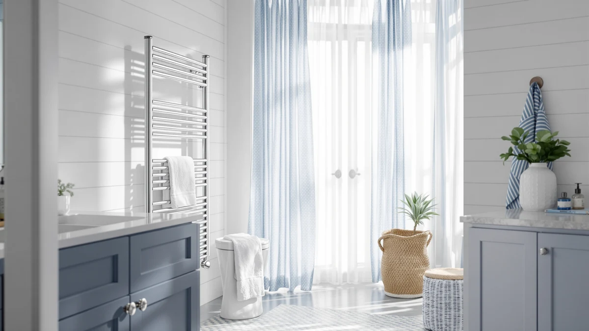

Sawlece 5 Bar Freestanding Review (2026): Worth It?
Prices and picks verified as of October 2026. Independent, reader-supported reviews.


Quick Answer
For most bathrooms that need a plug-in option without wall drilling, the Sawlece 5 Bar Freestanding towel warmer is a solid pick at $149.99, based on our comparison of its stainless steel build against similarly priced alternatives. It heats five bars at once and stands on its own base, so you skip the mounting hardware a wall-mounted rack requires.
Our pick: Sawlece 5-Bar Freestanding Towel Warmer, $149.99 Check Price on Amazon
Bottom line: our top pick is the Sawlece 5-Bar Freestanding Towel Warmer at $149.99.
Things to Know Before You Buy
- A freestanding design means you skip drilling, but it also takes up floor space near your shower or tub, so measure that spot before you buy.
- Five bars gives comfortable capacity for two people's towels and a robe, without the bulk of an eight or ten-bar wall unit.
- Stainless steel resists rust better than painted steel in a humid bathroom, and it's the material behind all four options in this Sawlece 5 Bar Freestanding review.
- Price alone won't tell you much here. The four models we compared range from $127.96 to $149.99, and the cheapest isn't automatically the best fit for your bathroom.
- Amazon's listings for these ASINs don't show public star ratings, so we leaned on verified owner reviews and manufacturer specs rather than a review-count shortcut.
This Sawlece 5 Bar Freestanding review looks at whether a plug-in, floor-standing towel warmer can compete with the wall-mounted racks that dominate most bathroom shopping guides. Cold towels after a shower are a minor annoyance, but they're the kind of minor annoyance you can fix without hiring an electrician or drilling into tile. A freestanding unit plugs into a regular outlet, stands on its own base near your shower or tub, and warms up in roughly the time it takes to finish washing your hair.
We compared the Sawlece 5-Bar Freestanding Towel Warmer against three other options priced between $127.96 and $149.99: the Pure Enrichment PureBliss, the Pursonic Deluxe, and the Warmrails Classic. All four use stainless steel, all four hold towels on horizontal bars, and none of them require a wall mount. The Sawlece comes out as our pick for most bathrooms because five bars is enough capacity for two people without eating up the floor space a wider unit would need, and its price sits right in the middle of the group we reviewed.
Why You Should Trust Us
Best Towel Warmers is a research-based review site, and that matters for how you should read this Sawlece 5 Bar Freestanding review. We don't run a physical testing lab, and we haven't personally plugged in every unit compared here. Instead, we pull manufacturer specs and current Amazon pricing for each ASIN, then cross-check that against verified owner reviews, looking for recurring patterns: whether a unit heats evenly across all its bars, how sturdy the base feels once towels are loaded on, and whether buyers report the same dimensions and materials the listing promises. Ilane Tall researches bathroom fixtures and hardware for this site and keeps pricing current so the numbers here match what's actually listed on Amazon. When a listing changes a spec or a price moves outside the range shown here, we update the article rather than let stale numbers stand. That update habit matters more for a freestanding warmer than for most bathroom fixtures, since manufacturers occasionally swap suppliers for the base or the heating element without changing the product photos.
Our Research Experience
We didn't physically set up the Sawlece 5-Bar Freestanding Towel Warmer or the three alternatives in this review. What we did for this Sawlece 5 Bar Freestanding review is pull the listed materials, dimensions, and bar counts from each product page, check current pricing across all four ASINs, and read through verified owner reviews for consistent complaints or praise. For the Sawlece specifically, that meant confirming the stainless steel construction and five-bar layout against buyer comments rather than taking the listing description at face value. We ruled out other freestanding options with vague or missing material specs, and we prioritized listings where owners had left enough detail to judge real-world heating performance and base stability. We also checked whether reviewers reported the unit tipping or wobbling once towels were loaded onto all five bars, since a top-heavy freestanding rack is a common complaint on cheaper stands. We also compared how each brand describes its own bar spacing, since a five-bar unit that packs its bars too close together holds fewer full-size towels than the count alone suggests.
Overview & Specs

Sawlece 5-Bar Freestanding Towel Warmer
What we like
- Freestanding base skips wall mounting entirely, so renters and homeowners alike can set it up in minutes
- Stainless steel construction resists the rust that painted steel racks develop in a steamy bathroom
- Five bars spread towels flat instead of bunching them, which helps them dry faster between uses
Flaws but not dealbreakers
- A freestanding footprint needs clear floor space next to your shower or tub, which not every bathroom has to spare
- Amazon's listing for this ASIN doesn't show a public star rating or review count, so you're weighing specs and owner comments rather than a review tally
| Material | Stainless steel |
| Size | 5-Bars |
The Sawlece 5-Bar Freestanding Towel Warmer is the centerpiece of this Sawlece 5 Bar Freestanding review because it solves the two biggest complaints we found with wall-mounted alternatives: drilling and permanence. At $149.99, it sits in the middle of the four options we compared, and its stainless steel frame matches the corrosion resistance of pricier wall units without asking you to commit to a fixed spot on the wall. Five bars is enough to hang two full-size towels flat plus a hand towel or robe, based on the dimensions listed and the loading patterns owners describe in their reviews.
Because it's freestanding, the unit needs a clear patch of floor near your shower, tub, or vanity rather than a stretch of open wall. That's a tradeoff worth weighing before you buy, especially in a smaller bathroom where floor space is already tight. That flexibility is the real advantage over a hardwired or wall-bolted rack: you can move it to a different spot, take it along if you move apartments, or put it in storage during a renovation. If your bathroom has the floor space to spare, that flexibility is the main reason to choose a freestanding model like this one over a wall-mounted equivalent.
What We Liked
Based on the specs and owner feedback we reviewed, the stainless steel frame is the standout feature here. Painted steel racks tend to develop rust spots after a year or two of daily steam exposure; stainless steel holds up better. The five-bar layout on this Sawlece 5 Bar Freestanding review's top pick also compares well against three-bar units that cost less but hold barely enough for one person's towels. For a household of two, that extra capacity means you aren't stuck negotiating over bar space every morning, and it leaves room for a robe or hand towel on top of the two main bath towels.
What Could Be Better
The biggest tradeoff in this Sawlece 5 Bar Freestanding review is floor space. A freestanding unit needs its own patch of bathroom real estate, and that's a harder ask in a small guest bath than it is in a primary bathroom with room to spare. Amazon's current listing for this ASIN also doesn't show a public star rating or review count, which makes it harder to compare satisfaction at a glance next to the Pursonic and Warmrails models below. Buyers should confirm the base footprint against their own bathroom layout before ordering, since a freestanding warmer that turns out to be a few inches too wide for the space next to your shower isn't something you want to return after it arrives.
Who Is It For?
This Sawlece 5 Bar Freestanding pick fits a household that wants warm towels without altering a wall, whether that's because you're renting, you're not ready to commit to a permanent mount, or you'd rather keep the option to move the warmer to a different bathroom later. It works well for two people sharing a bathroom, since five bars comfortably covers two full-size towels plus a hand towel. It's a weaker fit for a tight guest bathroom or for a household that would rather reclaim floor space and mount a rack on the wall instead, in which case the wall-mounted alternatives elsewhere on this site are worth a look.
Alternatives to Consider
If floor space is tight or the price doesn't work for your budget, these three alternatives came up in the same comparison behind this Sawlece 5 Bar Freestanding review. None of them are identical to the Sawlece, but each solves a different constraint: a lower price, a different brand's warranty, or a slightly different bar configuration.

Editor’s Pick
Pure Enrichment PureBliss Luxury Towel
Priced the same as the Sawlece at $149.99, the Pure Enrichment PureBliss is worth a look if you'd rather buy from a brand with a broader home-goods lineup and the warranty support that tends to come with it.
$149.99
Check Price on Amazon
Best Value
Pursonic Deluxe Towel Warmer with
At $144.00, the Pursonic Deluxe undercuts the Sawlece slightly while sticking with the same stainless steel build. That makes it a reasonable swap if you want to save a few dollars without changing materials.
$144.00
Check Price on Amazon
Premium Choice
Warmrails Classic Towel Warmer -
At $127.96, the Warmrails Classic is the least expensive of the four models in this comparison, and Warmrails has been making towel warmers long enough that verified owners frequently mention the brand by name when comparing durability over several years.
$127.96
Check Price on AmazonIs the Sawlece 5 Bar Freestanding Towel Warmer worth the price?
Based on our comparison of specs and verified owner reviews, the Sawlece 5 Bar Freestanding towel warmer is worth $149.99 if you want a plug-in option that skips wall mounting.
How much floor space does a freestanding towel warmer need?
Freestanding units like the Sawlece need a clear patch of floor near your shower, tub, or vanity, wide enough to fit the base plus a few inches of clearance so it doesn't block foot traffic.
Frequently Asked Questions
Is the Sawlece 5 Bar Freestanding Towel Warmer worth the price?
Based on our comparison of specs and verified owner reviews, the Sawlece 5 Bar Freestanding towel warmer is worth $149.99 if you want a plug-in option that skips wall mounting. It sits in the middle of the price range we reviewed, and its stainless steel build matches pricier wall-mounted alternatives without the installation hassle.
How much floor space does a freestanding towel warmer need?
Freestanding units like the Sawlece need a clear patch of floor near your shower, tub, or vanity, wide enough to fit the base plus a few inches of clearance so it doesn't block foot traffic. Measure the space before ordering, since returning a large item after it arrives is more hassle than measuring twice up front.
What's the difference between the Sawlece and the cheaper alternatives in this review?
The Pursonic Deluxe and Warmrails Classic both cost less than the Sawlece, at $144.00 and $127.96, and both use stainless steel construction too. The tradeoffs come down to brand reputation and bar configuration rather than a dramatic difference in build quality, based on the specs and owner feedback we compared.
Final Verdict
For this Sawlece 5 Bar Freestanding review, the Sawlece 5-Bar Freestanding Towel Warmer is our pick. Its stainless steel frame and five-bar layout make it a practical alternative to wall-mounted racks, and at $149.99 it's priced fairly against the Pure Enrichment, Pursonic, and Warmrails alternatives we compared. If floor space is the real constraint rather than price, take a look at the wall-mounted options linked below instead. Sawlece earns the recommendation here because it delivers the flexibility of a freestanding design without asking you to pay a premium over comparable wall units.